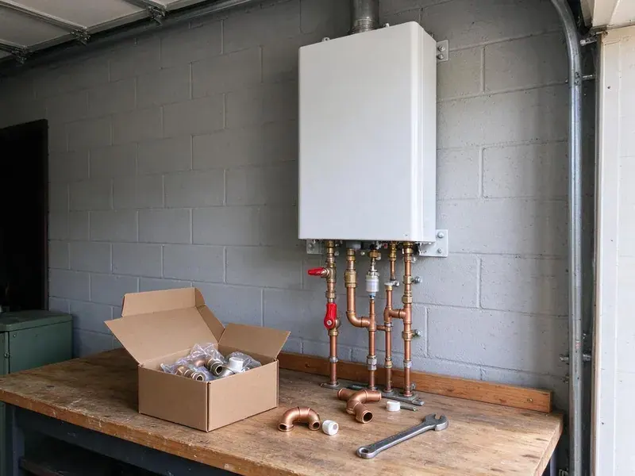

Water Softener Installation in Akron, OH
Our Akron, OH plumbers install softeners on existing loops or plumb in a new loop for soft water through the house.
- Quick Softener Installs
- Free Hardness Testing
- Clear Pricing
- Labor Warranty
Schedule Your Water Softener Install in Akron, OH
Every system is sized to your hardness and household.
Softener and Filter Installs in Akron, OH
HRL Plumbing installs water softeners and conditioners that reduce calcium and magnesium. Homeowners around Akron often install a softener to protect water heaters and reduce spotting on fixtures. Left alone, the minerals crust faucets, cloud glasses and settle in a hard layer at the bottom of the water heater. We can test it.
Some of what we do:
- Loop installs and bypass valves
- Code-compliant installs
- Correct system sizing

Additional Plumbing Installation Services in Akron, OH
We install water heaters, pumps, lines, and fixtures across Akron, OH with precision workmanship that meets every local code.


Customers
Why Choose HRL Plumbing for Water Softener Installation in Akron, OH?
Hard water shortens the life of water heaters, dishwashers and faucets and leaves scale on shower glass. A properly sized softener protects your plumbing and cuts down the hours you spend scrubbing spots off glass and tile. It helps every appliance.
- Good Systems, We install long-lasting softeners from established brands.
- Local Experience, We know the hardness levels found around Akron and across Ohio.
- Cleaner Home, Fewer soap scum and hard water spots on fixtures and dishes.
Citywide Coverage
Every neighborhood of Akron and the surrounding communities is part of our service area. Old houses and new builds alike are on our schedule.
Experienced Team
Our plumbers have installed many softener models in Ohio homes. They handle basic setups and whole-house systems with filters alike.
Safety-First Approach
Softener drain lines need an air gap to prevent backflow into the system. Our drain connections are air-gapped to code.
Trusted Certified Akron Plumbing Services Professionals
At HRL Plumbing, we are proud to offer certified plumbing services throughout Akron, OH. Credentials matter in this trade. Our plumbers hold recognized industry credentials, and they follow strict safety and quality rules on every repair, installation and maintenance call we run.
Call Us Now PHCC Plumbing Contractor Recognition
PHCC Plumbing Contractor Recognition Better Business Bureau (BBB) Accreditation
Better Business Bureau (BBB) Accreditation Angi Certified Pro
Angi Certified Pro ISO 9001 Quality Management Certification
ISO 9001 Quality Management CertificationWater Softener Installation Services in Akron, OH
Salt-Based Water Softener Installation in Akron
Ion exchange is the only method that truly removes hardness from water. We install salt-based softeners with a resin tank sized to your grains per gallon, a brine tank, a bypass valve and a drain line that ends at a code-approved air gap. Programming is the last step. Regeneration time is usually set for 2 a.m.

Ecodyne Water Softener Installation in Akron
Ecodyne softeners are sold at many home stores, and we install them for homeowners who already bought one. Install follows the manufacturer manual for bypass, drain and overflow, then we set hardness and regeneration. Bring your own unit. We set it up for you.
Commercial Water Softener Installation in Akron, OH
Restaurants, hotels and laundromats feel hard water in their equipment first. Commercial softeners we install use larger resin tanks or twin-tank alternating systems so soft water is available around the clock, even during regeneration. Equipment lasts longer. We schedule around your hours.
Whole-House Water Softener Systems in Akron
On a whole-house system, the softener goes on the main line after the shutoff and before the water heater. Every whole-house install gets a bypass valve, and we add a pressure reducing valve if incoming pressure is too high. Soft water reaches every fixture. We can skip the hose bibs.
High-Efficiency Water Softener Installation in Akron
High-efficiency softeners use upflow brining and metered valves to cut salt and water use. A new metered unit often uses far less salt and water than an older model on a timer, which shows up on both bills. The savings add up. Several models are available.
Softener Loop Installation in Akron
No loop? A loop is the plumbing that routes the main line through a softener, and many older homes were built without one. We cut it in for you. Where we can, we keep hose bibs and irrigation on hard water to save salt. Future service gets easier too.
Salt-Based Water Softener Systems in Akron, OH
Salt-based softeners use ion exchange, swapping calcium and magnesium for sodium on a bed of resin beads. HRL Plumbing sets them up with the right resin and brine tanks. A metered control valve regenerates only when needed, which keeps salt and water use down. They work best on very hard water.

Salt-Free Water Conditioner Installation in Akron
Salt-free conditioners do not soften water, and we say so up front. They change the minerals into crystals that do not stick to pipe walls and heating elements, so scale drops off without adding sodium or using a drain line. Little upkeep is needed. They work best on moderate water.
Nearby Water Softener Installers in Akron, OH
Soft water makes a difference you notice in the first shower. Our crews cover the whole area around town and the nearby communities, and most installs get scheduled within a few days of the first call. Scheduling is easy.
Our team knows local water and how hard water wears on plumbing. We recommend systems that fit your household and your budget, then explain salt, settings and service so the system keeps working. Simple upkeep.
HRL Plumbing at a Glance
- Licensed and insured plumbers serving Akron, OH
- Same-day appointments and 24/7 emergency response
- Clear written estimates, no hidden fees
- 4.9-star rated by 673+ Ohio customers
Akron Map
Akron Information
- Population
- 188,701
- Area codes
- 330/234/216
- Service area
- Akron and towns within a 40 mile drive
- Nearby
- Cuyahoga Falls, Canton, Parma, Cleveland
Homeowners around Akron often install a softener to protect water heaters and reduce spotting on fixtures. A softener installed where the water enters keeps that scale out of water heaters, pipes and fixtures in Akron, OH.
Expert Services
Call HRL Plumbing for reliable plumbing work done by licensed pros in Akron, OH.
Our Specialized Plumbing Services in Akron, OH
At HRL Plumbing, we handle the full list of plumbing services across Akron, OH. From leak detection to full system installs, our team works fast and charges fair prices on homes and commercial properties alike. Explore our core services below:


Our Water Softener Install Process in Akron, OH
Here is what to expect when you schedule a softener install with us.
Request a Quote
Contact us at (740) 449-7505 to set up a visit. We test your water and give you a written quote with no obligation.
System Selection
Our plumbers help you choose the right system based on hardness, use and budget.
Installation
Licensed plumbers install the softener, with all plumbing to code, then test it.
Frequently Asked Questions About Water Softener Installation in Akron
Water softener installation in Akron, OH usually runs $1,500 to $4,000. System type, brand, capacity and how much plumbing work the install needs all move the price within that range. New loops cost more. You get a written quote after we test.
Half a day covers most residential installs, usually three to six hours. The time depends on your existing plumbing, whether a loop is already in place and which type of system goes in. A loop saves hours.
Some homeowners try it, but we recommend a plumber. Cutting into the main, setting the bypass, running the drain to an air gap and programming the valve all have to be right, or you get leaks and poor softening. Warranties often require pro installs.
Sized and installed correctly, a softener should not noticeably drop your pressure. A pressure drop after install usually means the valve is too small or a filter is clogged.
Fleck, Culligan, Ecodyne and Kenmore are some of the brands we install. Our plumbers walk you through the options and help you pick a model that fits your water, your household and what you want to spend. Size matters more than brand.
Salt use depends on hardness, water use and how efficient the softener is. A family of four with fairly hard water might use 40 to 80 pounds of salt per month, and a metered high-efficiency model uses less. Metering cuts salt use.
Homes with hard water usually benefit from one. Homeowners around Akron often install a softener to protect water heaters and reduce spotting on fixtures. Softeners protect water heaters, fixtures and appliances from scale.
Ten to fifteen years is typical for a quality softener. Unit quality, how hard your water is and how well the system is maintained all change that, and resin can be replaced to extend it. Service helps.
Hear From Customers Who Hired Our Plumbing Experts

Greg S.
I manage a small strip center with six tenants. HRL Plumbing handles our annual backflow testing and fixed a recurring clog in the shared sewer line that had been backing into the nail salon. Their reports come in clean and on time.
Commercial Plumbing · Akron, OH
Emily R.
The shutoff valve under our kitchen sink snapped off in my hand on a Sunday morning. HRL Plumbing had someone out by early afternoon. He replaced both angle stops with quarter turn valves and showed me where our main shutoff was, which I honestly did not know.
Plumbing Repair · Canton, OH
James P.
Our restaurant had a slow leak at the hand sink that was rotting the cabinet base. HRL Plumbing came in at six in the morning before prep, replaced the trap and both supply lines, and was packed up before my first cook clocked in.
Commercial Plumbing · Parma, OH
Daniel K.
A pipe burst in the garage ceiling at 11 at night. Someone answered on the second ring, and the plumber was in my driveway about fifty minutes later. He shut off the main, cut out the split section, and had water back on before 2 am.
Emergency Plumbing · Lakewood, OHRobert G.
The camera showed a full break in our clay sewer line near the street. HRL Plumbing replaced it with a trenchless pipe burst, so the only digging was two small pits in the yard. They let us watch the footage before and after.
Sewer Line Replacement · Akron, OHMarcus H.
Grease from the fryer line kept clogging the kitchen drain at my diner. HRL Plumbing hydro jetted the line after closing, showed me the buildup on camera, and set us up on a quarterly cleaning so it does not catch us on a Friday again.
Drain Cleaning · Lakewood, OH